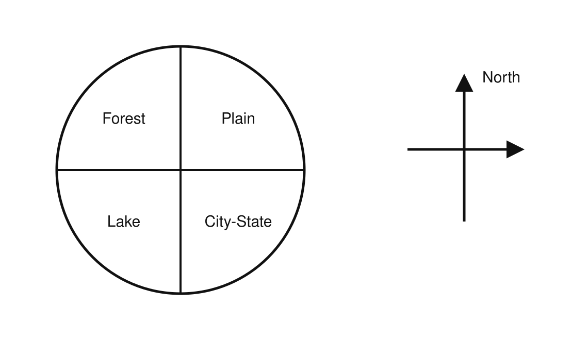
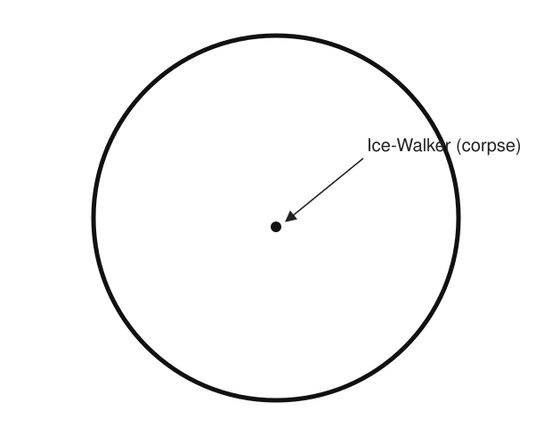
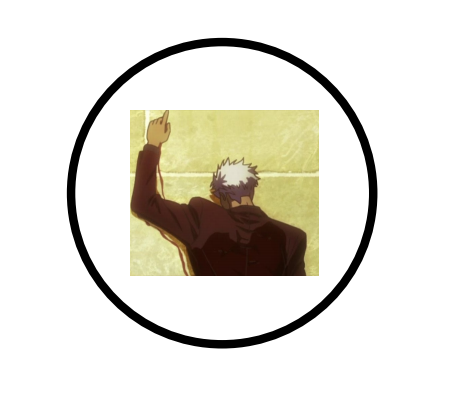
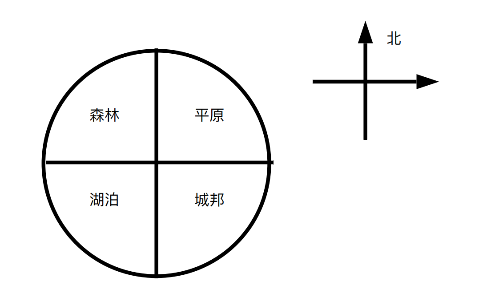
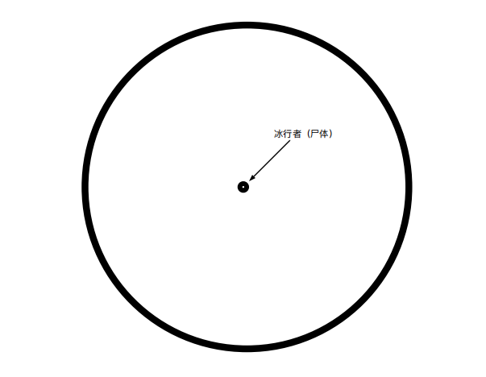

The game is cruel—so joy is death.

Join the Game!
When I woke again, I was in mid-air.
Head down, feet up, plummeting.
Instinct told me that a second ago I had not been here. What on earth was going on? So a second ago I had been…
My name is Zihan. I'm a 996 corporate drudge, and I'd been walking home from work. All I remember is a flash of light, and after that—nothing.
Oh, damn it, reincarnation into another world. I hope every truck driver out there learns to watch the road.
Well, if you work day and night without rest the way I do, I suppose there's no helping it.
Since I'd been reincarnated into another world, I figured I should first think about how to survive. Going by the plots of those Japanese anime, I ought to have some special power, and everything should go smoothly for me in this new world.
I tried with all my might—turns out I can't fly. Then I'm done for, aren't I? Next time I reincarnate, I really hope the gods give it some thought. If the spawn point is up in the sky, give me flight; if it's at the bottom of the water, at least give me the ability to dive.
Just as I spread my arms wide, ready to welcome death, a floating island came into view.
…A floating island?
Due north of me.
There was only the one, all around—so it seemed land floating in the air wasn't common in this world. Maybe the floating island was some kind of human technology. I hoped there would be someone there to collect my corpse.
I focused my mind and tried to see whether there was any power I could call upon. Suddenly, a force surged up from the soles of my feet straight to the top of my head. So I really do have one—but why was nothing happening around me?
Activate already, my power——
In what was almost the blink of an eye, the floating island appeared beneath my feet.
Huh? Could it be teleportation?
In any case, let's land first.
I glanced down at the floating island beneath me and saw that its shape was very regular, divided into four parts: lake, forest, city-state, and plain. Each part took up one quarter of the island.
Whatever happened, surviving on the water surface had the best odds, surely. I decided to come down on the lake. As I soared over its surface, I suddenly noticed a red dot at the lake's center. But it was too far away to make out what it was.
Things didn't go as I wished, though. I'd finally lined myself up with the lake's surface, only for my body to fly forward against my will. Landing in the forest was a choice too, I supposed—worst case, I'd just die.
I tried to activate my power one last time, only to find it wouldn't work. With no other option, I plunged headfirst into the forest.
——Ow, that hurt.
I actually didn't die? I brushed the dirt off my body and my hands and looked around. The trees all around me had been knocked flat. I'd leveled my landing spot into a clearing.
The me of now has this much power?
Surprised and delighted, I began to survey my surroundings. The woods were dense; I couldn't tell which way was which at all. Where the edge of the island was, where the city-state lay—I had no way of telling. Still, dense as they were, these trees only seemed to be a dozen meters or so tall.
While I was still hesitating, a sound suddenly came from the bushes behind me.
"Who's there?" I said warily.
"Rai?" The person in the bushes revealed their true form and asked, "Didn't you just say you were down south? How did you get here so fast? Truly the high-speed power user."
The newcomer was a youth, his black hair cut to ear length and combed very smooth. He wore black battle armor and held a Guandao—a Guan Yu–style polearm—in his hand. His lower body was very heavily protected, looking fully armored, but his upper body wore only a breastplate, his waist left exposed to the air, and his helmet was nowhere to be found. The youth looked to be only in his early teens.
"You've got the wrong person. I don't know this Rai you're talking about," I explained, and suddenly realized my own voice wasn't the same as the one in my memory. What did I look like now? My heart clenched, and that feeling welled up again from the soles of my feet.
"You…?" The youth's eyes filled with disbelief, then turned fierce. "Take this!"
"Let's talk this out properly!" I was about to explain, only to find my voice had changed again. It had become somewhat boyish—just like…the youth in front of me.
And somehow, a Guandao had appeared at my side too. Had I turned into his likeness?
The youth's blade stabbed in like a bolt of lightning. Perhaps I'd inherited his sharp reflexes—I tilted my head aside on instinct, and behind me came the sound of leaves shuddering. It seemed a tree had even fallen.
…So strong.
The youth gave me no room at all to explain. With a single flickering step he slipped around behind me, and this time he swung straight at my waist.
Getting cut in half at the waist less than five minutes after landing would be downright comical. I kicked off with both feet, dodged the slash with a backflip, and used the impact of my landing to jolt up the Guandao I'd just conjured from thin air, snatching it into my hand. The blade was a heavy thing, but the youth seemed to wield a force of a thousand jun, swinging it freely.
I raised the blade and caught the youth's next swing.
"You can even copy my power?" The youth spat, drew his weight back, and circled around again. I reacted at once, raising my blade to meet him. The two heavy weapons clashed together once more.
"Will you just listen to people for once!" Pressing against the youth's blade, I finally found a moment to shout.
"Hesitation gets you killed!" the youth suddenly cried, almost sobbing. Seeing him about to move again, I bent at the waist to dodge. He cut down in one stroke; I seized the opening and struck his sword hand with the haft of my blade. The youth, in pain, couldn't help loosening his grip, and seizing the chance I wrenched the blade away. With the blade in hand, I felt my strength increase another notch.
With his weapon gone, the youth's bravado instantly evaporated.
Since you couldn't let me enjoy myself, feel free to be sorry about it to your heart's content.
"Without my blade, my strength is weaker than an ordinary person's… Kill me or carve me up, do as you please."
"Listen to me. I'm not trying to kill you," I said, holding both blades to keep him from grabbing them, and went on. "I only just landed. Could you tell me what on earth is going on here? Why does hesitation get you killed?"
"Because the people here are killing one another." The youth slowly stood up, his eyes still hostile as he looked at me.
"Why are they killing one another?"
"Because of the floating island."
"Where did the floating island come from?" As I'd guessed, this floating island was man-made.
"It's the Master's Domain." Now that he mentioned it, the island was indeed wrapped in a faint, barely-there membrane.
"Could you stop answering one line at a time, and walk me through the whole thing from beginning to end?" I asked. Suddenly the youth's voice felt uncomfortable to use, so I tried whether I could switch back to my own form. The blade in my hand vanished, and the youth's blade instantly became heavy again.
"Who are you?" the youth asked, somewhat on guard.
"You don't recognize this face, do you. Then it seems this time it's the real me." I worked my legs a little. This body was clearly nowhere near as fit as the youth's.
"My name is Zihan. I'm an ordinary person, and I don't know why I just fell onto this floating island. And you?"
"My name is Ryunomine Hayato. I'm a student of the Academy. Two days ago, someone calling himself the Master attacked the Academy and killed everyone else, leaving only us. Then the Master wrapped the Academy in his Domain and lifted it up into the sky."
"Uh…" The mind of a super-villain really is hard to understand. "So basically you think a stranger like me is this so-called Master?"
"That's right, because our powers aren't that strong. Anyone capable of killing everyone in the Academy must be a rarely-seen mighty figure on the continent."
"Well, I'm not one either. I only arrived on this continent today."
"But you can Mimic. No matter how you look at it, that in itself is a very powerful skill—and a perfect one. We are all imperfect power users," the youth explained honestly. "For instance, without my blade, my strength vanishes—I'm worse than a five-year-old child."
"I see… Actually, I am the Master."
"So today really is the day I die…" The youth's face filled with the despair of one whose fate has run out.
"You actually believed that? I was lying to you." I patted him on the head. "Here's your blade back."
The youth retrieved his blade and warily backed away a few steps.
"So now, all we need to do is find the Master, right?" I rolled my shoulders and tried whether I could bring out any power. No strange event of any kind occurred. Honestly—so my real self has no power at all. How weak.
He took a stone out from the armor over his chest and spoke to it: "Unidentified falling object confirmed safe. Requesting assembly."
Almost instantly, everyone popped out from all directions.
The Interlinker—Fuke. She provided the team with home-made charm-tool walkie-talkies.
The Accelerator—Rai. He'd crashed into a tree trunk. I understood now why his body was so hard.
The Sensor—Nahi. She (he?) came hurrying over; the great bird ta keeps had been impossible to reach.
The Twin-Bodied—Helen. She and her double are always quarreling.
Add to that the Martial Artist—Ryunomine Hayato—and me—Zihan (the Copier).
The Master who destroyed the Academy—did he exist among us?
The Ice-Walker Dead on the Ice
"This is Zihan. A newly joined member. She probably isn't the Master," the samurai youth introduced me to everyone.
"Indeed she isn't. She's a new beacon that's joined the battlefield," Nahi said, narrowing her eyes, mysterious as ever.
"A newcomer, lovely, lovely," the two Helens said at the same time, and then started bickering over who was copying whose way of speaking.
Fuke, wearing a wreath of flowers on her head, sat on a tree branch sizing me up.
"I hear you turned into me just now." A man's voice blew past my ear. Rai had flickered behind me at some point without my noticing.
"Rai, don't frighten the newcomer." Fuke spoke into the stone in her hand. "Give her the comm device properly."
A stone appeared in my hand. Rai had returned to a spot a few meters away from me again. His movements really were impossible to follow. I picked up the stone and found it had a communication interface. It felt just like a smartphone with only QQ installed on it.
"None of us count as old hands either," Nahi corrected. "Don't forget, we only just met. We're still suspicious of one another."
"'We' did not kill the Ice-Walker," the two Helens chattered.
"Your word doesn't count for anything. I think we should let the newcomer decide. Because she certainly isn't the Master, and she isn't the culprit either," Nahi said gravely.
They quickly held a vote. Ryunomine, Nahi, the two Helens, and Rai decided to let me arbitrate; only Fuke alone disagreed.
"I'm not about to entrust my fate to someone else." She deliberately shook the tree branch.
So the red dot I'd seen earlier was the scene of the crime.
These few people now before my eyes had, before the Academy disaster, mostly never met one another. Because they had all been chosen by the Master, it was only under the guidance of Nahi's and Fuke's powers that they had just come together. But before long, a murder had occurred.
The dead woman was named the Ice-Walker—Han Meimei. She was the strongest power user in the Academy. Before the floating island was raised, she had once fought a duel against the Master. Even she had not won against the Master. Or rather—she had been crushingly defeated.
At the time, the Ice-Walker had been cut into three pieces by the Master; one slash struck her square in the chest, taking off part of her right arm along with it. Fortunately the slash was very clean, and before her body could fall apart, she used her power to seal the wounds, so she did not die. Though already gravely wounded, she remained a powerful combatant.
But just now, she had died at the center of the lake.
The state of the scene is as shown in the figure. Han Meimei died on the ice at the lake's center.


The scene was about one square meter of ice, very smooth and even, without any damage—said to be a hallmark of the Ice-Walker's power. Her right hand had been severed, leaving only the stump at the shoulder; her chest had been cut through at the middle of the ribcage, and all of her internal organs were gone. Her left hand was extended forward, fixed in place within an intact ice pedestal on the surface. From the marks, this wound was the one she'd taken during her duel with the Master before the floating island was raised; it was only that the ice she had previously used to seal the wound had been shattered by the Master, and that was what ultimately led to her death.
"Is she trying to convey some message?" Something like don't ever stop, perhaps. I didn't say the second half out loud.
"There is indeed the possibility of a dying message," Nahi's eyes opened a little wider, "because… we don't believe Senior could have been killed under these circumstances."
"The Ice-Walker is invincible on water," Ryunomine explained.
Han Meimei's power was—generating ice. But she could only use liquid water within her line of sight. That ruled out the possibility of using moisture droplets in the air, and of directly freezing an enemy's blood, I thought. Though if she could wound an enemy at all, she'd just win the match outright.
"Senior often carried a transparent thermos, for convenience in battle," Fuke explained. She, Nahi, and Han Meimei seemed to be closer than the rest. "She… used the water in the thermos to fight the Master for a long time, buying many people the time to escape. But during the fight, the thermos was destroyed."
The Ice-Walker had created an Inviolable shield wrapping her body. But the Master's technique performance was above hers, and it punched straight through her shield.
The ice the Ice-Walker generated seemed to be ordinary ice—the kind common in nature, plain ice. But she could imbue her own ice with magical reinforcement, strengthening its hardness. And the thermos, too, seemed to be some kind of reinforcement charm-tool.
Truly a thermos-domain deity.
To be able to trade blows so evenly—and yet she'd been killed while fighting on her home ground?
"I've only just arrived in your world. Could you give me a simple introduction to your combat-strength framework—the magic system?"
"I'll do it." Rai, who claimed to be "the most teaching-gifted person in the whole Academy," began his account.
In this world, a small minority of people are born with an Ability. These abilities never repeat—each person has only one, and it cannot be learned or lost. The magic system they study, on the other hand, is a system of magical-energy use independent of one's innate ability, called basic magic. Everyone has a certain total magical-energy reserve, and this figure too is determined at birth. Each time one uses an ability or basic magic, magical energy is consumed.
The uses of basic magic are very limited: it can only be used to reinforce the body. Concentrated in the legs, it can speed up running, reaching up to 20 km/h; concentrated in the hands, it can make both hands harder than steel, delivering punches or elbow strikes of tremendous lethality; concentrated in soft areas, it can also serve to protect the body.
The Domain is an extension of basic magic, similar to telekinesis—it can move objects at will. But unlike basic magic, which can be used simultaneously with an ability, while a Domain is active, no ability can be activated. That said, while a Domain is active, basic magic can still be used for reinforcement. Domains are very hard to learn, and people like the Master, who can move an entire continent, are rarer still.
None of the several people before me could use a Domain, but they had all studied the relevant theory. It wouldn't be strange for any of them to learn it at any time.
After Rai finished his account, Nahi added that she/he believed the reason the Master had chosen them was that they were imperfect products, false imitations of magic——
Each person's superpower had a flaw.
Martial Artist Ryunomine—with the "Demon Blade," his strength is boundless; without it, his strength is inferior to a five-year-old child's, and his total magical energy also plummets.
Interlinker Fuke—can link together objects she applies her ability to, but it only lasts 24 hours.
Twin-Bodied Helen—can summon a double of herself at any location within her line of sight, but once the double leaves her line of sight it must move in sync with her.
Sensor Nahi—can sense the total number of humans and the total magical energy within range, and resonates with animals, but cannot sense the specific information of either the humans or the magical-energy amounts.
Accelerator Rai—high-speed movement, far faster than magical-energy reinforcement, reaching up to 100 km/h. But sometimes he can't control his direction.
Last is me, who's just joined the battlefield—able to perfectly copy another person's appearance (seemingly excluding clothing) and ability. No flaw as yet.
I'm not a false imitation—wonderful.
Back to the case: the Ice-Walker's ice had had Fuke's ability applied to it, so the information it recorded was all stored. Their abilities could resonate; once Fuke had applied her ability, all the ice the Ice-Walker produced within the duration would be interlinked.
One hour ago, the Ice-Walker reported all was well. A few seconds later, she generated ice at the lake's center. Not a simple sheet of ice, but a pedestal driven down into the lakebed—an ice pedestal. This was the last time she activated her power before her death. After that, she lost contact.
"Can the Ice-Walker swim?" I asked. The answer I got was no. Nahi had taken the same PE class as the Ice-Walker. She would freeze over her own swimming lane every time; even the teacher could do nothing about her, and in the end she had no choice but to fail the course.
"She's even especially afraid of water," Nahi said with a sigh.
"Then why didn't she make a bigger ice pedestal?" This time I got no answer.
"Has anyone gone to look at the lake's center?" Again, silence.
The lake was two kilometers in diameter, and the Ice-Walker's body was a full kilometer away from everyone. After noticing the Ice-Walker's abnormal activity, Fuke immediately gathered everyone. But she had still been in the city-state at the time, and it took her ten minutes to rush over at full speed. Ryunomine had been in the forest; using magical-energy reinforcement, he leapt with all his might and reached the lakeshore adjoining the forest in a single bound, arriving at the scene within three minutes. He said that during that time he saw nothing suspicious. After reaching the scene, he chose to use Fuke's charm-tool to livestream it. But by then, the culprit was nowhere to be found.
Nahi had been on the plain, the farthest away. The floating island was eight kilometers in diameter, and she/he took a full half hour to come over from the other side of the island. Rai had also been in the forest; his ability kept making him crash into trees, so it took him twenty minutes. Helen had been searching for supplies in a house in the city-state, and she too took ten minutes to rush to the scene.
They found the Ice-Walker's lower body at the foot of a tree, the tree facing directly toward the corpse's cut surface.
"Could this one kilometer be crossed with magical-energy reinforcement? By jumping straight across, or something like that?" I asked.
"If your magical-energy reserve is S, then yes," Ryunomine answered.
Among those present, the only members whose magical-energy reserve could reach S were Ryunomine and Helen. Both reached S+ magical energy because of their ability's boost. Ryu had the "Demon Blade"; Helen had two people's worth of magical energy. However, magical-energy reinforcement didn't seem to noticeably improve swimming speed.
To be able to successfully jolt open the Ice-Walker's wound, one would have to possess at least this much strength—otherwise there'd be no way to get close to her at all.
Helen finally put away her double; without it, she looked somewhat forlorn.
"It certainly wasn't me. Even though I can split into two, once I do, my magical energy is halved," she said with a pout, the very picture of someone wronged. She looked to be only twelve or thirteen—young among a group of students of fifteen or sixteen.
Ryunomine, however, stayed silent, not proving his innocence the way Helen did.
If it were Rai, it would be possible for him to enter the lake quickly. His ability lets him accelerate both in the air and in the water. But then how would he have gotten the Ice-Walker onto the ice, and cut her apart?
It seemed the case had reached an impasse.
Even granting that the conditions for the crime were met, by what method had the culprit escaped? And if the culprit was Ryunomine, then within the three minutes from when the abnormality was discovered to when Ryunomine began his livestream, how had he killed the victim?
Standing around here, I wasn't going to think of anything. Maybe we should just disperse on the spot.
The Invisible One Revealed Among the Ruins
Before leaving, I did one last thing.
If the Master was among us, then I just had to turn into each of their forms and see whether I could use their abilities.
Unfortunately, good as the idea was, it didn't succeed. But there were a few pieces of information worth noting: the interlinking items I created lost their effect once I reverted. Nahi's ability range was the entire floating island. The failure rate of Rai's ability was quite high.
Fuke refreshed the duration on the charm-tools she'd given us. When the matter of whether to act together came up, Rai gave a cold snort.
"Even all of us together can't beat the Master. And besides, I don't trust any of you." Rai tossed out the line and left.
"Relax. Remember to keep in touch." Fuke bounded across the tree branches and vanished from view as well.
"Why isn't Xiaoxia here yet." Nahi turned and walked off irritably. She/he had a whistle at her waist, presumably used to summon the great bird.
Helen disappeared in a strange way. She summoned her double in the distance, and then vanished into thin air herself. It seemed either double could become the main body. It felt somehow eerie—it touched on some philosophical questions about the self.
Last was the youth Ryunomine, the only one who turned back to glance at me. He left in leaping bounds, each one hundreds of meters long, stamping crater after crater into the solid ground.
None of them traveled in company—perhaps they utterly distrusted one another.
At last I was the only one left. To fit in with everyone, I sent a message in the group chat through the charm-tool. The script they used was Chinese, which I could read; it seemed the gods were rather considerate after all.
The only one who replied was Ryunomine. It seemed this group chat was rather dead.
The charm-tool even had a navigation function. I walked toward the southeast, hoping to reach the city-state. The forest really was dense; without a compass, I might genuinely not have been able to find my way out.
At last I reached the end, and my view opened up: a small path led straight into the city-state's interior. Looking into the distance, there was a huge billboard, about ten meters tall and four or five meters across each way. I couldn't make out what was written on it.
The sky darkened, and hunger struck me. It was time to find somewhere to eat something.
But walking into the city-state, the scene in the streets turned my stomach. The stench of blood and flesh filled the streets. The city-state's residents hadn't even been qualified to join this game.
The Master had killed off all the city-state's residents bare-handed within half an hour, with almost no damage to the buildings. All this slaughter bought was a single piece of information: the Master's ability is Slash, and it is terrifyingly efficient—released with the mere raising of a hand, and within one second an ordinary person is reduced to powder.
Most of those living in this city-state were the students' civilian family members. For the boys and girls still alive, this was undoubtedly a heavy blow.
I pushed open the door of a small restaurant. This household had been cut fairly cleanly, the organs not splattered everywhere, so I could rest there. I tried for a while on those corpses, headless and otherwise, but it seemed I couldn't turn into them. The dead cannot become copy targets.
There was still milk at the counter. I took a carton, found a chair not splattered with blood, and rested. Scrolling through the charm-tool, I found Fuke had sent me a private message: How is it? Getting used to the comm device?
Very handy—it really has the feel of my old world.
That's good then.
So this world has stickers after all. She sent a very ugly dark-green great bird. Its eyes were glassy, its beak half open, the mouth full of drool. What species was this? I stared at it for ages and couldn't identify it, and could only file it under otherworldly beast.
This is the great bird Nahi keeps, Fuke explained.
So ugly, I grumbled inwardly, but didn't say it out loud.
Its name is Xiaoxia. It usually looks just like this, though it's actually rather cute once you've looked at it long enough. And it's very docile, very nice to the touch—one blow of the whistle and it'll come to your side~
So there were system default stickers. I sent a smiley face.
This one means being snarky, Fuke replied. I hurried to apologize. It seemed this world's culture was still a bit different from ours.
If we make it out alive, let's become companions. Fuke sent one last message, and her avatar went gray.
In the blink of an eye, the milk was gone. I walked out the door, looked up at the night sky, and found the floating island was covered by a faintly visible membrane overhead. Was that the special effect of the Domain? Above this membrane there were quite a few small silhouettes too. Looking closely, I found they were all the corpses of birds—could a bird hitting this Domain membrane actually die instantly? What ability of the Domain was this again? That would explain why Nahi couldn't reach her bird.
So this is a Domain? Maybe I could give it a try too…
For no particular reason, I exerted force on a bamboo basket by the roadside.
Feeling the flow of my own magical energy… turbulent currents of magical energy spilled out from my fingertips. Rather than with my eyes, I felt it—like flowing water, covering the entire bamboo basket. It seemed I had quite a talent for this.
Wrap it up.
Select the target.
Even with my eyes closed, that sense of touch told me there were several apples in the basket. If I selected only the basket, could they fly along too? To be safe, I decided to let the magical energy wrap those apples as well. After trying repeatedly, I found that even without selecting the apples, as long as the magical energy wrapped them inside, they too would become legitimate targets of the Domain. So this is how a Domain works?
So when I was falling—had I also been selected as a target of a Domain?
After kneading at the basket with magical energy for a long while, I finally decided to wrap the Domain around it and try to lift it up a little.
Just then——
The bamboo basket shot off rapidly toward the north.
Before I could even puzzle over it, an unfamiliar figure appeared at the street corner. That figure caught the basket and stamped it flat with one foot. The person was draped in a robe scavenged from the city-state, face covered, impossible to identify.
But there was no doubt—the only one who would do this was—the Master.
I had to call for help.
The moment I pulled out the charm-tool, the Master charged at me. But its speed wasn't all that fast.
An unfounded confidence suddenly welled up in my heart. Without the Slash ability, the Master was nothing but a super-soldier. With that thought, I put the charm-tool back in my pocket, adjusted my stance, and prepared to meet the enemy.
The Master delivered a flying kick straight into my abdomen. With no time at all to protect it, I took the hit head-on, was hurled into the restaurant from before, and instantly lost the ability to move.
Something hot came up from my throat—was it the milk I'd just drunk, or blood? I stopped thinking about it. Let's just wait for death first.
Was there still time to call for help? No—my arms wouldn't move at all.
My otherworldly adventure was about to end before Chapter One had even begun. That just wouldn't do. But at the crucial moment, I couldn't pull off any dramatic awakening either.
Turn into Ryunomine, I silently chanted. Only Ryunomine had a chance of winning. But the ability wouldn't activate. It seemed using the Domain just now had drained all my magical energy. I still didn't know what my own mana-regeneration rate was.
Like a passive effect, the little remaining magical energy flowed through my body. It didn't feel like reinforcing the body with magical energy—rather, the exact opposite. Reinforcement strengthens my own existence, but this feeling… weakened my existence instead. Rai hadn't mentioned anything like this. More than magical-energy manipulation, it felt like… an ability activating?
The Master, treading on the broken rubble, searched here and there among the corpses. For one instant, our eyes met. In that moment, all the blood in my body seemed to freeze.
God, I want to go back to being a corporate drudge——
Unexpectedly, the final blow was slow to come. The Master looked away, as though it hadn't seen me at all, and went on searching through the rubble heap.
"I've encountered the Master." A calm boy's voice came from the charm-tool. The Master turned its head warily, but a sword slash had already come chopping down at it, and it could only take pains to dodge. Ryunomine Hayato—descended onto the street.
"I'll be your opponent." Blade in hand, he charged at the Master.
"How troublesome." This voice—there was no telling whether it was a man's or a woman's. The Master dodged his first downward cut; it seemed it had no heart for battle and was preparing to leave.
This retreat confirmed for me that the Master, as it was now, had already spent a great deal of magical energy maintaining the Domain. It couldn't beat a full-condition Ryunomine—at least, not on the stat sheet.
And at this moment, my choice was——
To get up from the rubble heap and flee at once. My magical energy still wasn't enough to accelerate, so I could only run with all my might at an ordinary person's speed. Sorry—all I can do is hold you back!
The reason the Ice-Walker had acted alone—was it also because the others would get in the way when they were around? That's how I consoled myself.
As I fled in the opposite direction, the Master was fighting Ryunomine's blade bare-handed. I'd thought they could fight until reinforcements returned, but the next moment, Ryunomine vanished from my view. Several crashes of houses shattering came through.
Sent flying?
I couldn't catch the Master's movements at all. This is bad—how is it so strong?
The next instant, the Master fled the scene. Thankfully nothing major came of it.
"All members, report your positions." At some point, the all-members call had been opened, and everyone's cameras turned on with it. The first to come into view was Nahi's figure by the lake; her/his calm voice came from the other end. "I'll report first. I'm on the westernmost edge of the lake."
"I'm almost at the edge of the city-state," I hurried to respond. Even if I couldn't beat the Master, having company was good.
"We're at the edge of the city-state too," Helen's voice came through clearly.
"Really at the edge—one careless step and you'd fall right off," the other Helen added.
"I'm in the forest too, about to head out. Oh, I see Nahi." Fuke's voice sounded as relaxed as ever.
"…Ryunomine slammed into me. He's still unconscious. I'm on the plain." The last voice to come through was Rai's. He sounded haggard.
"That's good. I heard someone was attacked. Let's assemble." Nahi proposed. This time, everyone agreed.
The meeting place was set at the city-state boundary, and before long, we had all assembled. We sat in a courtyard. The brains of this house's owner had splattered all over the ceiling, so we didn't dare go inside.
"I'd like to ask about a few things," I spoke up. "What is the mechanism for activating a Domain, which all of you studied at the Academy?"
This time it was Helen who answered; she'd only just taken that class. The method she described was roughly the same as what I'd done earlier: first use magical energy to wrap a region of space, and all objects within that space become targets of the Domain. During the use of a Domain, you can also cancel any of the targets within it, the equivalent of creating an air bubble within water, excluding part of the space. The targets within that excluded part of space enter a state of being stationary relative to the ground for a few seconds, and undergo an instant of rigidity. It can be understood as being kicked out of the Domain's system. Targets within a Domain can be canceled at will. If the power user dies, the Domain and its effects automatically vanish.
Also, when two Domains select the same target at the same time, the effect is the same as canceling the target.
"In that case…" I was about to say more when suddenly, a tremendous crash came from beside me. The four walls seemed to be torn up, and along with a patch of the ground they all flew up together and collided with another house. Both turned into heaps of broken tile and rubble.
Ryunomine, as if by reflex, sprang to his feet, snatched up his great blade, and prepared to fight.
"Is there anyone inside the house?" I scanned my surroundings—no one was missing. "Nahi, there's no one else here, is there!?" Fuke demanded.
"How could this be…" He/she panicked too.
A figure stood up, covered in wounds, but seemingly still able to move normally. That figure raised both hands high. I clearly heard someone behind me click their tongue.
"Even with an ability, it's perfectly natural not to notice me," she said, patting the dust off herself. She was a woman in a white suit, wearing a half-mask. "But I'm no villain—probably."
She slowly walked out of the ruins. As if to show her sincerity, she took off the mask. This face was exactly the same as mine.
"Allow me to explain. My ability is Invisibility—all means of detection are useless against me. This is even the first time I've learned it can block others' abilities. But my whereabouts are laid bare to the Master; just as this beginner here could sense the apples in the basket, the Master can sense me through the Domain. This is also the only way to defeat Invisibility. Don't worry, though—there's no one else here." She made eye contact with each of us in turn.
"No other ability interference either?" I asked.
"Abilities have a range limit. There's certainly no other ability on this floating island. Otherwise Nahi would have detected it," the newly appeared invisible one said to me. "Just as you can borrow my face, but can't borrow the face of someone on the other side of this world."
Seeing Ryunomine's blade still leveled at her, she continued: "Based on the commotion just now, I already understand what's going on. Although my true profession is Phantom Thief, rest assured, I won't harm you. This Master and I were originally on peaceful terms. But since he means to harm me, I have no choice but to step forward and point out his identity."
She seemed to have already taken control of the situation. But I knew her total magical energy wasn't high—a couple of exchanges with the Master and it was spent. At most she was around A grade.
"So then, let's have a guess. What we know is now completely the same. And this information is already enough to know the identity of the instigator of it all—the Master."
"Do we need to go over it again…" Before the words were out of my mouth, I was cut off.
"Shut up, you genuine article! What we're looking for is the false imitation among the false imitations—you don't get a say. Who is disguising themselves with an imperfect ability? You, the blade-wielding youth—is it you, disguising an ordinary blade as a Demon Blade, fancying yourself to have an ability while relying on overwhelming stats? Or is it you, the one keeping the great bird, disguising an ability by relying on the Domain's own sensing? Or perhaps it's this fast-running lad, just barely holding on with nothing but magical-energy reinforcement? Come on, take a guess!"
ゲームは残酷だ。だから歓びは死を意味する。
ゲームに参加せよ！
ふたたび目を覚ましたとき、私は空中にいた。
頭を下に、足を上にして落下していた。
本能が告げていた。一秒前には、私はここにいなかった、と。いったいどういうことだ。では一秒前、私は……
私の名は子涵。996（朝九時から夜九時まで週六日）の社畜で、もともと退勤の帰り道を歩いていた。覚えているのは一筋の閃光だけで、そのあとは何も覚えていない。
ああ、忌々しい異世界転生というやつだ。世のトラック運転手はみんなもっと前をよく見てほしいものだ。
もっとも、私のように昼も夜も休みなく働いていたなら、こうなるのも仕方ないのかもしれない。
異世界に転生したからには、まずどうやって生き延びるかを考えよう。あの手の日本アニメの筋書きでいけば、私には何か特殊能力があって、異世界では万事順風満帆のはずだ。
力の限り試してみた——なんだ、飛べないのか。それじゃあもう終わりじゃないか。次に転生するときは、神様にはよくよく考えてもらいたい。スポーン地点が空の上なら飛行を、水の底なら、せめて潜水の能力をくれ。
ちょうど私が両腕を広げ、死を迎え入れようとしたとき、一つの浮遊島が視界に入ってきた。
……浮遊島？
真北の位置にある。
あたりにはそれ一つしかなかった。どうやらこの世界では大地が宙に浮かぶのはあまり一般的ではないらしい。浮遊島も何か人類の技術なのかもしれない。あそこに私の死体を引き取ってくれる者がいてほしいものだ。
私は精神を集中し、使える能力がないか試してみた。突然、一筋の力が足の裏から駆け上がり、頭のてっぺんまで突き抜けた。やはり本当にあったのか——だが、なぜ私の周りでは何も起きないのだ？
さあ発動しろ、私の能力よ——
ほとんど瞬きの間に、浮遊島が私の足元に現れた。
えっ？まさか瞬間移動か？
ともかく、まずは着陸しよう。
足元の浮遊島を一目見ると、その形はとても整っていて、四つの部分に分かれていた。湖、森林、都市国家、そして平原。それぞれの部分が島の四分の一を占めていた。
いずれにせよ、水面に降りるのが生き延びる可能性が最も高いだろう。私は湖に降りることにした。湖面を飛び越えるとき、湖の中心に赤い点が一つあるのにふと気づいた。だが距離が遠すぎて、それが何かは見分けられなかった。
しかし事は願いどおりにはいかなかった。ようやく湖面に狙いを定めたというのに、体が自分の意思に反して前へ飛んでいく。森林に落ちるのもまた一つの選択ではあるだろう。最悪、死ぬだけだ。
最後にもう一度能力を発動しようとしたが、効かないとわかった。やむを得ず、私は真っ逆さまに森林の中へ突っ込んだ。
——いてて、痛い。
まさか死ななかったのか？私は体と手についた泥を払い落とし、あたりを見回した。周りの木はすべて私の衝撃で倒れていた。私は着地点を更地にならしてしまったのだ。
今の私にこれほどの力があるのか？
驚きと喜びのなか、私は周囲を観察しはじめた。林はとても密で、まるで方角が見分けられない。どこが島の縁で、どこが都市国家なのか、まったく区別がつかない。ただ、これほど密でも、この木々はせいぜい十数メートルほどの高さしかないようだった。
まだ迷っているとき、背後の茂みから突然、物音がした。
「誰だ？」と私は警戒して言った。
「ライ？」茂みの中の人物が正体を現し、こう尋ねた。「さっきは南にいるって言ってたじゃないか。どうしてこんなに早く来たんだ？さすが高速能力者だな。」
現れたのは一人の少年だった。黒い髪は耳の高さで切りそろえられ、とても滑らかに整えられている。黒い戦闘鎧を身にまとい、手には関羽の青龍偃月刀のような大刀（関公刀）を持っていた。下半身はひどく重装で、鎧をひととおり着込んでいるように見えたが、上半身は胸当てだけで、腰は空気にさらされており、兜にいたっては行方知れずだった。少年は見たところ、ほんの十代そこそこに見えた。
「人違いだ。君の言うライなんて知らない。」と私は説明したが、ふと自分の声が記憶の中のものと違うことに気づいた。今の私はどんな姿なのだ？思わず胸が締めつけられ、あの感覚がまた足の裏から這い上がってきた。
「お前……？」少年は信じられないという目をしたが、たちまち険しくなった。「覚悟しろ！」
「話せば分かるって！」私が説明しようとしたとき、声がまた変わったことに気づいた。いくらか幼くなり、まるで……目の前の少年のように。
そして、なぜか私の手元にも一振りの大刀が増えていた。私は彼の姿になったのか？
少年の刀が稲妻のごとく突き込んできた。おそらく彼の鋭い反射神経を受け継いだのだろう、私は無意識に頭をかわした。背後で木の葉がざわめく音がした。木まで倒れたようだった。
……強い。
少年は私に説明する隙をまったく与えず、一瞬の身のこなしで背後へ回り込み、今度は私の腰めがけて斬りかかってきた。
着地して五分も経たないうちに胴を真っ二つにされたら、まったく笑い話だ。私は両足で蹴り出し、バック宙で斬撃をかわすと、着地の衝撃を利用して、さっき虚空から生み出したあの大刀を跳ね上げ、ひと掴みで手にした。その刀は重い代物だったが、少年は千鈞の力を備えているらしく、自在に振り回していた。
私は刀を持ち上げ、少年の次の一振りを受け止めた。
「俺の能力まで複製できるのか？」少年は唾を吐き、力を引いて身を沈め、ふたたび背後へ回り込んだ。私もすぐさま反応し、刀を構えて迎え撃った。二つの重い得物がふたたび打ち合わさった。
「いいから人の話を聞けって！」私は少年の刀を受け止めながら、ようやく叫ぶ隙を見つけた。
「迷えば死ぬんだぞ！」少年は突然、泣き声まじりに大声で言った。彼がまた動こうとするのを見て、私は腰をかがめて避けた。彼が一振りで斬り下ろしてくると、私はその隙をついて、刀の柄で彼の刀を握る手を打った。少年は痛みに思わず手を緩め、私はその機に乗じて刀を奪い取った。刀を手にすると、力がまた一段増したのを感じた。
武器を失うと、少年の勢いはたちまち消え失せた。
私を存分に楽しませてくれなかったのだから、心ゆくまで申し訳なく思うがいい。
「刀がなければ、俺の力は常人より弱い……殺すなり切り刻むなり、好きにしろ。」
「私の話を聞いてくれ。別に殺そうとしているわけじゃない。」私は彼に奪われないよう二振りの刀を握ったまま、こう続けた。「私はついさっき降りてきたばかりなんだ。ここがいったいどういうことなのか、話してくれないか？どうして迷えば死ぬんだ？」
「ここの人間どうしが殺し合っているからだ。」少年はゆっくりと立ち上がったが、私を見るその目にはまだ敵意があった。
「どうして殺し合っているんだ？」
「浮遊島のせいだ。」
「浮遊島はどこから来たんだ？」思ったとおり、この浮遊島は人造物だった。
「マスターの領域だ。」言われてみれば、島は確かにあるかなきかの薄い膜に覆われていた。
「一言ずつ答えるのはやめて、最初から最後まで事の次第をひととおり説明してくれないか？」と私は尋ねた。ふと少年の声がどうも使い慣れない気がして、自分の姿に戻れるかどうか試してみた。手の中の刀が消え、少年の刀もたちまち重くなった。
「お前は誰だ？」少年はいくらか警戒して尋ねた。
「私の顔には見覚えがないんだな。それなら、今度こそ私本人ってわけだ。」私は脚を少し動かしてみた。この体は明らかに少年ほど鍛えられていなかった。
「私の名は子涵。ただの普通の人間で、なぜかこの浮遊島に落ちてきたんだ。君は？」
「俺の名は龍之峰隼人（リュウノミネ・ハヤト）。学院の生徒だ。二日前、マスターと名乗る者が学院を襲い、ほかの者を皆殺しにして、俺たちだけを残した。それからマスターは学院を領域で包み、ずっと高空まで持ち上げたんだ。」
「えっと……」超級の悪役の思考はやはり理解しがたい。「つまり、見知らぬ私を、その『マスター』とやらだと思ったわけか？」
「そうだ。俺たちの能力はそれほど強くないからな。学院の全員を殺せる者は、きっと大陸でも滅多に見ない強者にちがいない。」
「私にもそんな力はないよ。今日この大陸に来たばかりなんだから。」
「でもお前は模倣ができる。どう見たって、それ自体が非常に強力な技能だし、しかも完全だ。俺たちはみんな、不完全な能力者なんだ。」少年は正直に説明した。「たとえば、俺は刀がなければ力が消えて、五歳の子どもにも劣る。」
「なるほど……じつは私がマスターなんだ。」
「やはり今日が俺の死ぬ日なのか……」少年は寿命の尽きた者のような絶望の表情を浮かべた。
「本当に信じたのか。嘘だよ。」私は彼の頭をぽんと叩いた。「刀は返すよ。」
少年は刀を取り戻し、警戒しながら数歩あとずさった。
「それじゃあ今は、マスターを見つけ出しさえすればいいわけだな？」私は肩をほぐし、何か能力が使えないか試してみた。何の不思議な現象も起こらなかった。まったく、本体には能力がないのか。弱いな。
彼は胸の鎧の中から一つの石を取り出し、それに向かって言った。「正体不明の落下物、安全を確認。集合を要請する。」
ほとんど瞬時に、全員が四方八方から現れた。
連結者（インターリンカー）——芙可（フウケ）。彼女はチームに手製の呪具トランシーバーを提供してくれた。
急速者（アクセラレーター）——ライ。彼は木の幹に突っ込んでいた。なぜ彼の体があれほど硬いのか、私は合点がいった。
探知者（センサー）——那希（ナヒ）。彼女（彼？）は慌てて駆けてきた。彼／彼女の飼う大鳥とはなかなか連絡がつかないらしい。
双身者（ツインボディ）——海伦（ヘレン）。彼女と分身はいつも口げんかをしている。
そこに武道者（マーシャルアーティスト）——龍之峰隼人と、私——子涵（複製者）を加える。
学院を滅ぼしたマスターは、私たちの中にいるのか？
氷面の上で死んだ氷渡り
「こちらは子涵。加わったばかりのメンバーだ。彼女はおそらくマスターじゃない。」武士の少年がみんなに私を紹介した。
「確かに違うね。彼女は戦場に新しく加わった信標（ビーコン）さ。」那希は目を細め、相変わらず謎めいた様子で言った。
「新人だ、いいねえ、いいねえ。」二人の海伦が同時に言い、それからどちらが誰の喋り方を真似しているかで言い争いはじめた。
芙可は花冠を頭にのせ、木の枝に座って私を値踏みしていた。
「さっき俺になったんだってな。」男の声が耳元に吹きかかった。ライはいつの間にか、私が気づかぬうちに背後へ瞬間移動していた。
「ライ、新人を怖がらせないの。」芙可は手の中の石に向かって言った。「ちゃんと通信機を渡してあげなさい。」
私の手の中に一つの石が増えていた。ライはまた私から数メートル離れた位置に戻っていた。彼の動きはまるで目で追えない。私は石を手に取り、それに通信インターフェースがあるのに気づいた。QQだけがインストールされたスマートフォンのような感覚だった。
「私たちだって古株とは言えないよ。」那希が訂正した。「忘れないで、私たちはついさっき会ったばかり。まだ互いに疑い合っているんだ。」
「『あたしたち』は氷渡りを殺してなんかいないよ。」二人の海伦がぺちゃくちゃと言った。
「君たちの言葉はあてにならない。私は新人に裁定を委ねるべきだと思う。彼女は確実にマスターじゃないし、犯人でもないからね。」那希は厳かに言った。
彼らはすばやく一度投票を行った。龍之峰、那希、二人の海伦、そしてライは私に裁定させることに決め、芙可ひとりだけが反対した。
「私は自分の運命を他人に委ねる気はないからね。」彼女はわざと木の枝を揺らした。
なるほど、私がさっき見た赤い点は、殺人現場だったのだ。
今、目の前にいるこの数人は、学院の惨劇の前にはほとんど互いに面識がなかった。みなマスターに選ばれたために、那希と芙可の能力の導きで、ようやく集まったばかりだった。だがほどなくして、殺人事件が起きたのだ。
死者の名は氷渡り（アイス・ウォーカー）——韓梅梅（ハン・メイメイ）。彼女は学院で最も強い能力者だった。浮遊島が浮かび上がる前、彼女はかつてマスターと一戦を交えたことがある。その彼女でさえ、マスターには勝てなかった。いや、むしろ——惨敗だった。
そのとき、氷渡りはマスターに三つに斬り裂かれた。一撃が彼女の胸の真ん中に当たり、右腕の一部もろとも斬り落とした。幸い斬り口がきわめて平らだったため、体がばらばらになる前に、彼女は能力で傷口を封じ、死なずにすんだ。すでに重傷を負ってはいたものの、なお強力な戦力だった。
だが、ついさっき、彼女は湖の中心で死んだのだ。
現場の状況は図のとおりである。韓梅梅は湖の中心の氷面の上で死んでいた。
現場はおよそ一平方メートルの氷面で、たいへん滑らかで平らで、何の損傷もなかった。氷渡りの能力の特色だという。彼女の右手は切断され、腕の付け根だけが残っていた。胸は肋骨の中ほどから断ち切られ、内臓はすべて消えていた。そして彼女の左手は前へ伸ばされ、氷面の上の無傷の氷の台座の中に固定されていた。痕跡から見て、この傷は彼女が浮遊島の浮上前にマスターと戦ったときに負ったものだった。ただ、それまで傷口を封じていた氷をマスターに砕かれ、それがついに彼女の死を招いたのだ。
「彼女は何かのメッセージを伝えようとしているのか？」たとえば「決して立ち止まるな」とか。後半は口に出さなかった。
「確かにダイイングメッセージの可能性はあるね。」那希の目が少し見開かれた。「なぜなら……私たちは、先輩がこんな状況で殺されるとは信じられないんだ。」
「氷渡りは水上では無敵なんだ。」龍之峰が説明した。
韓梅梅の能力は——氷の生成。だが、目に見える範囲の液体の水しか利用できない。そうなると、空気中の水滴を使う可能性も、敵の血液を直接凍らせる可能性もないわけだ、と私は思った。もっとも、敵を傷つけられるなら、そのまま試合を決めてしまえばいい。
「先輩はよく透明な水筒を持ち歩いていたよ。戦闘に便利だからね。」芙可が説明した。彼女と那希、韓梅梅は、ほかの面々よりも親しかったらしい。「先輩は……水筒の中の水を使ってマスターと長いこと戦って、大勢の人が逃げる時間を稼いでくれた。でも戦いのさなかに、水筒は壊されてしまったんだ。」
氷渡りは体を包む不可侵の盾を作り出していた。だがマスターの術式性能は彼女を上回り、その盾を真っすぐに撃ち抜いた。
氷渡りが生成する氷は、ふつうの氷のようだった。自然界によくある、ただの氷。だが彼女は自分の氷に魔力強化を付与し、その硬度を高めることができた。そして水筒もまた、何らかの強化呪具のようだった。
まさに水筒領域の神だ。
これほど互角に渡り合えるというのに、地元で戦っていながら殺されてしまったというのか？
「私はついさっき君たちの世界に来たばかりなんだ。君たちの戦力体系——魔力システムを簡単に説明してくれないか？」
「俺がやろう。」「学院じゅうで最も教えるのが上手い人間」を自称するライが、語りはじめた。
この世界では、ごく一部の人間が生まれつき能力を持っている。これらの能力は重複せず、各人に一つだけで、習得することも失うこともできない。一方、彼らの学ぶ魔法システムは、生来の能力とは独立した魔力使用の体系で、基礎魔法と呼ばれる。誰もが一定の魔力総量を持ち、この数値もまた生まれつき決まっている。能力や基礎魔法を使うたびに、魔力が消費される。
基礎魔法の用途はきわめて単純で、身体の強化にしか使えない。脚に集中させれば走る速度を上げられ、最高で時速二十キロに達する。手に集中させれば両手を鋼鉄よりも硬くでき、殺傷力のきわめて高いパンチや肘打ちを繰り出せる。柔らかい部位に集中させれば、身体を守る役にも立つ。
領域は基礎魔法の延長で、念動力に似ており、物体を思いのままに動かせる。だが基礎魔法とは異なり、基礎魔法は能力と同時に使えるのに対し、領域を発動している間は、いかなる能力も発動できない。とはいえ、領域を発動している間も、基礎魔法による強化は依然として使える。領域はきわめて習得が難しく、マスターのように大陸を丸ごと動かせる者はなおさら稀だ。
目の前の数人は、誰も領域を使えなかったが、みな関連する理論知識は学んでいた。いつ習得しても不思議ではない。
ライが語り終えると、那希が付け加えた。彼女／彼は、マスターが彼らを選んだ理由は、彼らが不完全な製品、魔法の偽物だからだと考えていた——
各人の超能力には欠陥があるのだ。
武道者・龍之峰——「妖刀」を持てば力は無尽蔵だが、失えば力は五歳の子どもにも劣り、魔力総量も大きく減る。
連結者・芙可——能力をかけた物品どうしを連結できるが、効果は二十四時間しか続かない。
双身者・海伦——視界内の任意の位置に自分の分身を召喚できるが、分身が視界を離れると本体と同期して動かざるを得なくなる。
探知者・那希——範囲内の人間の総数と魔力の総量を感知でき、動物とも共鳴するが、人間および魔力量の具体的な情報までは感知できない。
急速者・ライ——高速移動、魔力強化よりもはるかに速く、最高で時速百キロに達する。だが、ときに方向を制御できない。
最後は、戦場に加わったばかりの私——他人の容姿（衣服は含まないようだ）と能力を完全に複製できる。今のところ欠陥なし。
私は偽物ではない——よかった。
事件に戻ろう。氷渡りの氷には芙可が能力をかけていたため、記録された情報はすべて保存されていた。彼女たちの能力は共鳴を起こすことができ、ひとたび芙可が能力をかければ、効果が続く間に氷渡りが生み出した氷はすべて連結される。
一時間前、氷渡りは無事を報告した。数秒後、彼女は湖の中心で氷を生成した。単純な氷面ではなく、湖底に突き刺さった——氷の台座だった。これが彼女が死ぬ前に最後に発動した能力だった。そのあと、彼女は連絡を絶った。
「氷渡りは泳げるのか？」と私は尋ねた。返ってきた答えは、泳げない、だった。那希は氷渡りと同じ体育の授業を取っていた。彼女は毎回自分のレーンを凍らせてしまい、先生もどうにもできず、結局は単位を落とすしかなかった。
「先輩はそのうえ水がとくに苦手だったんだ。」那希はため息をついて言った。
「それなら、どうしてもっと大きな氷の台座を作らなかったんだ？」今度は答えが返ってこなかった。
「誰か湖の中心を見に行った人はいるのか？」またしても沈黙だった。
湖は直径二キロで、氷渡りの死体はみなからまるまる一キロ離れていた。氷渡りの異変に気づいたあと、芙可はすぐさま全員を招集した。だが彼女はそのとき都市国家にいて、全速力で駆けつけるのに十分かかった。龍之峰は森林にいて、魔力強化で力いっぱい跳び、一跳びで森林に隣接する湖畔に到達し、三分以内に現場に着いた。彼が言うには、その間に怪しいものは何も見なかったという。現場に着くと、彼は芙可の呪具を使って現場を生中継することにした。だがそのときには、犯人はすでに姿を消していた。
那希は最も遠い平原にいた。浮遊島は直径八キロで、彼女／彼は島の反対側から来るのにまるまる三十分かかった。ライも森林にいて、その能力のせいで木にぶつかり続け、それで二十分かかった。海伦は都市国家の家で物資を探していて、彼女も十分で現場に駆けつけた。
彼らは一本の木の根元で氷渡りの下半身を見つけた。その木は死体の切断面の真正面を向いていた。
「魔力強化でこの一キロを越えられるのか？まっすぐ跳び越えるとか？」と私は尋ねた。
「魔力量がSあれば可能だ。」龍之峰が答えた。
その場で魔力量がSに達するメンバーは、龍之峰と海伦だけだった。二人とも能力の上乗せによってS+の魔力量に達していた。龍は「妖刀」を、海伦は二人分の魔力量を持っていた。ただし、魔力強化は泳ぐ速度を目立って向上させはしないようだった。
氷渡りの傷口をうまく揺さぶり開けるには、少なくともこれほどの力を備えていなければならない。さもなければ、そもそも近づくことすら不可能だ。
海伦はようやく分身を引っ込めた。分身を失った彼女は、どこか寂しげに見えた。
「あたしじゃないよ。分身はできるけど、分身したら魔力量は半分になっちゃうんだから。」彼女は口をとがらせ、いかにも心外だという様子だった。彼女は見たところほんの十二、三歳で、十五、六歳の学員たちの中では年少のほうだった。
だが龍之峰は黙ったまま、海伦のように自分の潔白を証明しようとはしなかった。
ライなら、すばやく湖の中に入ることは可能だろう。彼の能力は空中でも水中でも加速できる。だが、それならどうやって氷渡りを氷面まで運び、そして彼女を斬り裂いたというのか？
事件は手詰まりに陥ったようだった。
犯行の条件が満たされていたとしても、犯人はいったいどんな方法で逃げたのか？そしてもし犯人が龍之峰だとしたら、異変が発見されてから龍之峰が生中継を始めるまでの三分間に、彼はどうやって被害者を殺したというのか？
ここに突っ立っていても何も思いつかない。いっそその場で解散しようか。
廃墟に現れた透明な者
立ち去る前に、私は最後に一つのことをした。
もしマスターが私たちの中にいるなら、彼らの姿になって、その能力が使えるかどうか試してみればいい。
残念ながら、思いつきは良かったものの、うまくいかなかった。だが、いくつか注目に値する情報があった。私が作り出した連結用の品は、元に戻ると効果を失った。那希の能力範囲は浮遊島全体だった。ライの能力の不発率はかなり高かった。
芙可は私たちに渡した呪具の効果時間を更新した。一緒に行動するかどうかという話になると、ライは冷ややかに鼻を鳴らした。
「全員が束になってもマスターには勝てない。それに、俺はお前たちを信用していない。」ライは一言だけ残して立ち去った。
「平気平気。こまめに連絡してね。」芙可は木の枝を飛び跳ねて、こちらも視界から消えた。
「小夏（シャオシャー）はまだ来ないのか。」那希はいらだたしげに背を向けて歩み去った。彼女／彼の腰には笛が一つあり、おそらく大鳥を呼ぶのに使うものだろう。
海伦は奇妙な方法で姿を消した。彼女は遠くに分身を召喚し、それから自分自身が忽然と消えた。どうやらどちらの分身でも本体になれるらしい。なんだか妙だ。自己についての哲学的な問題に関わってくる気がする。
最後は少年・龍之峰で、彼だけが振り返って私を一目見た。彼は跳ねるように去っていき、一跳びで数百メートルもの距離を進み、固い地面に次々と大きな穴を踏み抜いていった。
彼らは誰も連れ立って行かなかった。おそらく互いをまったく信用していないのだろう。
ついに私ひとりだけになった。みなに溶け込むために、私は呪具を通じてグループチャットにメッセージを一つ送った。彼らの使う文字は私にも読める中国語で、神様もなかなか気が利いているらしい。
返信してきたのは龍之峰ひとりだけだった。このグループチャットはかなり閑散としているらしい。
この呪具にはナビゲーション機能まであった。私は南東に向かって歩き、都市国家にたどり着きたいと思った。この森林は本当に密で、方位磁針がなければ、本当に抜け出せなかったかもしれない。
ついに端までたどり着くと、視界が開けて、一本の小道が都市国家の内部までまっすぐ通じていた。遠くを見やると、巨大な広告板があり、高さは十メートルほど、縦横ともに四、五メートルはありそうだった。何が書かれているのかは見分けられなかった。
空が暗くなり、空腹が私を襲った。どこかで何か食べる場所を探すころあいだ。
だが都市国家に入ると、街路の光景がまた私の胃をむかつかせた。血肉の生臭さが街路に立ち込めていた。都市国家の住民は、このゲームに加わる資格すらなかったのだ。
マスターは三十分のうちに、素手で都市国家の住民を皆殺しにし、建物にはほとんど損傷を与えなかった。この虐殺で得られた情報はただ一つ。マスターの能力は斬撃であり、その効率はおそろしく、手を挙げるだけで放たれ、一秒のうちに普通の人間は粉々になる。
この都市国家に住む者の大半は、学員たちの民間人の家族だった。まだ生きている少年少女たちにとって、これはまぎれもなく大きな打撃だった。
私は小さな食堂の扉を押し開けた。この家の者はわりと綺麗に斬られていて、内臓が四方に飛び散ってはいなかったので、休むことができた。私はそれらの首のある、あるいは首のない死体に向かってしばらく試してみたが、彼らにはなれないようだった。死者は複製の対象にはなれないのだ。
カウンターにはまだ牛乳があった。私は一パック取り、血の飛んでいない椅子を見つけて、休みはじめた。呪具をいじっていると、芙可から私あてのダイレクトメッセージが届いているのに気づいた。どう？通信機には慣れた？
とても使いやすいよ。前の世界の感じがして。
それならよかった。
この世界はスタンプを送れるのか。彼女はとても不細工な濃緑色の大鳥を送ってきた。目はうつろで、くちばしは半開き、口じゅうがよだれだらけだ。これは何の種だ？私はしばらく見ても見分けがつかず、異世界の魔獣に分類するほかなかった。
これは那希が飼っている大鳥だよ。芙可が説明した。
ずいぶん不細工だな。私は内心でつっこんだが、口には出さなかった。
名前は小夏っていうんだ。ふだんはずっとこんな見た目だけど、見慣れるとけっこう可愛いんだよ。それにとてもおとなしくて、触り心地もよくて、笛を一吹きすればそばに来てくれる～
システム既定のスタンプまであるのか。私は笑顔のスタンプを送った。
これは嫌味って意味なんだよ。芙可が返信した。私は慌てて謝った。この世界の文化は、私たちのところとはやはり少し違うらしい。
もし生き延びられたら、仲間になろうね。芙可は最後のメッセージを送り、アイコンが灰色になった。
あっという間に牛乳は底をつき、私は扉の外へ出て、夜空を見上げた。すると浮遊島の上方が、見え隠れする薄い膜に覆われているのに気づいた。あれは領域の特殊効果だろうか？この膜の上には、小さな影もたくさんあった。じっと見ると、なんとすべて鳥の死体だった——鳥がこの領域の膜にぶつかると、瞬時に死んでしまうのか？これもまた領域の何の能力なのだ？こうなると、那希が彼女の鳥と連絡がつかないのも無理はない。
これが領域か。もしかすると私にも試せるかもしれない……
なんということもなく、私は道端の竹かご一つに向かって力を込めはじめた。
自分の魔力の流れを感じる……魔力の乱流が指先からあふれ出た。私は目よりも、それが流れる水のように竹かご全体を覆うのを感じ取った。どうやら私にはなかなか才能があるらしい。
包み込む。
対象を選択する。
目を閉じていても、あの触覚が、かごの中にいくつかリンゴがあると教えてくれた。もし竹かごだけを選択したら、それらは飛んでくるのだろうか？念のため、私はやはり魔力でそのリンゴたちも包み込むことにした。何度も試した結果、リンゴを選択しなくても、魔力でそれらを内側に包み込みさえすれば、それらもまた領域の正当な対象になるとわかった。これが領域の動く仕組みなのか？
では、私が落ちてきたとき、私もまた領域の対象として選択されていたのではないか？
魔力で竹かごを長いことなで回したあと、私はついに領域でそれを包み込み、少し上へ持ち上げてみることにした。
ちょうどそのとき——
竹かごが北へ向かって、勢いよく飛んでいった。
不審に思う間もなく、街角に見知らぬ人影が現れた。その人影は竹かごを受け止め、一蹴りで踏みつぶした。その者は都市国家で拾ってきた長衣をまとい、顔を覆っていて、誰なのか見分けがつかなかった。
だが疑いようもない。こんなことをするのは、ただ一人——マスターだ。
助けを呼ばなければ。
私が呪具を取り出すなり、マスターは私に向かって突進してきた。だが、その速度はさほど速くなかった。
得体の知れない自信が、突然私の胸の中に湧いてきた。斬撃の能力を失ったマスターなど、ただの超人兵士にすぎない。そう思って、私は呪具をポケットに戻し、構えを整え、敵を迎え撃つ準備をした。
マスターは飛び蹴りを一発、私の腹部のど真ん中に当ててきた。腹を守る暇などまるでなく、私は真っ向からその一撃を食らい、さっきの食堂の中へ投げ飛ばされ、たちまち行動する力を失った。
熱いものが喉からこみ上げてきた。さっき飲んだ牛乳か、それとも血か？もう考えるのはやめた。とりあえず死ぬのを待とう。
今から助けを呼ぶのは間に合うか？無理だ。腕がまったく動かない。
異世界冒険は第一章が始まりもしないうちに終わろうとしていた。それはあんまりだ。だが肝心なときに、劇的な覚醒もできなかった。
龍之峰になれ。私は心の中で唱えた。龍之峰だけが勝つ見込みがある。だが能力は発動しなかった。どうやらさっき領域を使って魔力を使い切ったらしい。私はまだ自分の魔力回復効率がどれくらいかも知らないのだ。
パッシブ効果のように、わずかに残った魔力が体の中を流れていた。魔力で身体を強化する感覚とは違う。むしろ正反対だ。強化は自分の存在を強めるが、この感覚は……かえって私の存在を弱めていた。ライはこんなものについては話していなかった。魔力操作というより、もっと……能力の発動に近い気がした。
マスターは砕けた瓦礫を踏みつけ、死体のあいだをあちこち探っていた。ほんの一瞬、私とマスターの目が合った。その瞬間、私は全身の血が凍りつくようだった。
神様、私は社畜に戻りたい——
意外にも、とどめの一撃はなかなか来なかった。マスターは目をそらし、まるで私が見えていないかのように、瓦礫の山の中を探し続けた。
「マスターと遭遇した。」冷静な少年の声が呪具から伝わってきた。マスターは警戒して振り返ったが、すでに一筋の剣撃がそれめがけて斬りかかってきており、苦労してかわすほかなかった。龍之峰隼人が——街路に降り立った。
「俺がお前の相手だ。」彼は刀を構えてマスターへ突進した。
「面倒だな。」この声は、男か女かまるで聞き分けられなかった。マスターは彼の最初の斬り下ろしをかわし、どうやら戦う気はなく、立ち去ろうとしているようだった。
この退却で、私は確信した。今のマスターは、すでに大量の魔力を領域の維持に費やしている。万全の状態の龍之峰には勝てない——少なくとも、ステータス表の上では。
そしてこのとき、私の選んだ行動は——
瓦礫の山から立ち上がり、すぐさま逃げ出すことだった。魔力はまだ加速するには足りず、私はただ普通の人間の速度で力の限り走るしかなかった。ごめん——足を引っ張ることしかできなくて！
氷渡りが単独で行動したのも、ほかの人がいると邪魔になるからだったのではないか。私はそう自分を慰めた。
私が反対方向へ逃げる一方で、マスターは素手で龍之峰の刃に立ち向かっていた。援軍が戻るまで持ちこたえられると思っていたのに、次の瞬間、龍之峰は私の視界から消えた。家屋が砕ける音が何度も伝わってきた。
吹き飛ばされた？
マスターの動きがまるで捉えられない。まずい、なんでこんなに強いんだ。
次の瞬間、マスターは現場から逃げ去った。幸い、大事にはならなかった。
「全員、位置を報告して。」いつの間にか、全員通話が開かれていて、それに合わせて全員のカメラもオンになっていた。最初に目に入ったのは湖畔にいる那希の姿で、彼女／彼の冷静な声が向こうから伝わってきた。「まず私から報告する。私は湖の最も西の端にいる。」
「私はもうすぐ都市国家の縁に着く。」私は慌てて応じた。マスターに勝てなくても、仲間がいるのはいいことだ。
「あたしたちも都市国家の縁にいるよ。」海伦の声がはっきりと伝わってきた。
「ほんとに縁だよ、うっかりすると落っこちちゃう。」もう一人の海伦が付け加えた。
「私も森林にいて、出るところだよ。あ、那希が見えた。」芙可の声は相変わらず気楽そうだった。
「……龍之峰が俺の上に落ちてきた。まだ気を失ってる。俺は平原にいる。」最後に伝わってきた声はライだった。彼はひどく疲れた様子だった。
「それならよかった。誰かが襲われたと聞いた。集合しよう。」那希が提案した。今度は、みなが同意した。
集合場所は都市国家の境界に決まり、ほどなくして、私たちは全員集結した。私たちは一つの中庭に腰を下ろした。この家の主の脳みそが天井じゅうに飛び散っていたので、私たちは中に入る気にはなれなかった。
「いくつか伺いたいことがあるんだ。」と私は口を開いた。「みんなが学院で学んだ、領域の発動メカニズムはどういうものなんだ？」
今度答えたのは海伦で、彼女はちょうどその授業を受けたばかりだった。彼女が述べた方法は、私がさっきやったのとおおむね同じだった。まず魔力で一区画の空間を包み込むと、空間内の物体はすべて領域の対象になる。領域の使用中には、その中の任意の対象を取り消すこともできる。水中に空気の泡を作るのに似ていて、空間の一部を除外するのだ。この除外された部分の空間内の対象は、数秒間の地表に対して静止した状態に入り、瞬間的な硬直を起こす。領域の体系から蹴り出されたものと理解できる。領域内の対象は自在に取り消せる。能力者が死亡すれば、領域とその効果は自動的に消える。
それに、二つの領域が同時に一つの対象を選択したときは、効果は対象を取り消したのと同じになる。
「それなら……」私がまだ話そうとしたとき、突然、すぐ脇から轟音が伝わってきた。四方の壁が引き抜かれたかのように、一帯の地面もろとも、ひとまとめに飛び上がり、別の家屋と激突した。両方とも瓦礫の山になった。
龍之峰は条件反射のように飛び起き、大刀を引っつかんで戦う構えをとった。
「誰か家の中にいるのか？」私はあたりを見回した——誰も欠けていない。「那希、ここにはもう他に誰もいないはずだろう！？」芙可が問いただした。
「そんなはずは……」彼／彼女もうろたえた。
一つの人影が立ち上がった。全身傷だらけだが、どうやらまだ普通に動けるようだった。その人影は両手を高く挙げた。私は背後で誰かが「ちっ」と舌打ちするのをはっきり聞いた。
「能力があっても、私に気づかないのは至って自然なこと。」彼女は身についた埃を払った。白いスーツを着て、半分の仮面をつけた女性だった。「でも私は悪人じゃない——たぶんね。」
彼女は廃墟の中からゆっくりと歩み出てきた。誠意を示すためか、彼女は仮面を外した。その顔は私とまったく同じだった。
「ひとつ説明させてもらおう。私の能力は透明化。あらゆる探知手段が私には無効だ。他人の能力まで遮断できると知ったのは、これが初めてだけれどね。でも私の居場所はマスターには丸見えなんだ。ちょうどこの初心者がかごの中のリンゴを感知できたように、マスターも領域を通じて私を感知できる。これが透明化を打ち破る唯一の方法でもある。でも安心して、ここにはもう他に誰もいないよ。」彼女は私たち一人ひとりと目を合わせた。
「ほかに能力の干渉もないのか？」と私は尋ねた。
「能力には範囲の制限がある。この浮遊島の上には、ほかの能力はきっとないよ。さもなければ那希が探知しているはず。」新たに現れた透明な者は私に言った。「ちょうどあなたが私の顔を借りられても、この世界の反対側にいる者の顔は借りられないようにね。」
龍之峰の刀がなお向けられているのを見て、彼女はさらに続けた。「さっきの騒ぎから、私はもうどういうことか分かった。私の本職は怪盗だけれど、安心して、あなたたちを害したりはしない。私とこのマスターは、もともとは互いに無事に過ごしていた。だが彼が私を害そうとするからには、私も前に出て、彼の正体を指し示すほかない。」
彼女はもう場を掌握したようだった。だが私は知っていた。彼女の魔力総量は高くなく、マスターと二、三度交えただけで尽きてしまったのだ。せいぜいAランク程度というところだろう。
「それでは、当ててみよう。私たちの知っていることは、もう完全に同じになった。そしてこの情報だけで、すべての首謀者——マスターの正体を知るには十分なんだ。」
「もう一度おさらいする必要が……」私の言葉が口から出きらないうちに、さえぎられた。
「黙りなさい、本物（真物）さん！私たちが探しているのは、偽物の中の偽物。あなたが口を挟む余地はない。誰が不完全な能力を偽装しているのか？刀を持った少年、あなたは普通の刀を妖刀に偽装して、ずば抜けたステータスを頼りに、自分には能力があると思い込んでいるのではないの？それとも、大鳥を飼っているあなた、領域そのものの感知を頼りに能力を偽装しているの？あるいは、この足の速い若者、ただ魔力強化だけで何とか持ちこたえているのかしら？さあ、当ててみせて！」
游戏是残酷，所以欢乐即是死亡。

加入游戏吧！
再醒来时，我正在空中。
头朝下，脚朝上地下坠。
本能告诉我，前一秒的时候，我还不在这里。这到底怎么回事？那我前一秒的时候在……
我叫子涵，是一名996社畜，原本正走在下班的路上。只记得有一阵闪光，后面就什么都不记得了。
哦，该死的异世界转生。希望世界上的货车司机都长点眼睛。
如果像我一样没日没夜地工作的话，那也没办法吧。
既然转生到了异世界，就先思考一下该怎么活下去吧。按照那种日本动画剧情的话，我应该会有一些特殊能力，在异世界顺风顺水才对。
用尽全力试了一下，原来不能飞啊。那岂不是完蛋了。下一世转生的时候希望神明好好考虑一下啊。重生点在天上，就给个飞行；在水底的话，至少给个潜水吧。
正当我张开怀抱，准备迎接死亡的时候，一座空岛进入了我的视野。
……空岛？
在正北边的位置。
四周只有一座，看来在这个世界土地浮空不怎么常见。空岛也可能是什么人类科技吧。希望那里有人为我收尸。
我集中精神，尝试了一下有没有可以动用的能力。突然，一股力量从脚底窜上来，直冲头顶。原来真的有啊，但为什么我周围什么事都没有发生？
快发动啊，我的能力——
几乎是一眨眼的时间，空岛出现在我的脚下。
欸？难道是瞬移？
不管怎么样，先着陆吧。
我望了一眼脚下的空岛，发现它的形状很规整，分成四个部分，分别是湖泊、森林、城邦和平原。每个部分占据空岛的四分之一。
无论如何，都是水面上生还的可能性最大吧。我决定降落在湖上。飞跃湖面的时候，突然发现湖心有一处红点。但距离太远，看不清是什么。
然而事与愿违，我好不容易瞄准了湖面，身体却不自觉地向前飞。落尽森林里也是一种选择吧，大不了就是一死。
我想最后一次发动能力，却发现不起作用。无奈，只能一头扎进森林之中。
——好痛。
居然没死？我拍了拍身上和手上的泥土，四下看看，周围的树全都被我震倒了。我把降落之处夷为了平地。
现在的我居然有这么大能耐？
又惊又喜之下，我开始观察四周。树林很密集，完全分不清方向。哪里是岛屿的边缘，哪里又是城邦，完全无法分清。不过虽然茂密，这些树好像也就十来米高的样子。
正在犹豫之时，背后的草丛里忽然传来声音。
“是谁？”我警觉道。
“雷？”草丛里的人显出真身，问道，“你刚才还说你在南边。怎么这么快就来了？不愧是高速能力者。”
来者是名少年，黑色头发齐耳，梳理得很柔顺。他身穿一身黑色战甲，手中拿着一把关公刀，下身十分笨重，看上去铠甲穿戴齐全，但上半身只穿了胸甲，腰部暴露在空气中，头盔更是不知所踪。少年看上去，只有十几岁的模样。
“你认错人了，我不认识你说的雷。”我解释道，突然发现自己的声音和记忆中不一样。我现在是什么样子？心中不禁一紧，那股感觉又从脚底漫上来。
“你……？”少年露出难以置信的眼神，随即变得凶狠，“接招吧！”
“有话好好说啊！”我正要解释，却发现声音又发生了变化。变得有些许稚嫩，就跟……面前的少年一样。
我的手边，不知为何也多出了一把关公刀。我变成了他的模样？
少年的刀迅雷般刺来。或许是继承了他的敏锐神经，我下意识偏开脑袋，身后传来树叶震悚的声音。好像还有树倒下了。
……好强。
少年完全不给我解释的空间，一个闪身绕道后面，这一次是正对着我的腰挥砍。
落地还没五分钟就被腰斩可就搞笑了啊。我双脚一蹬，后空翻躲过斩击，利用落地的冲击，把方才凭空变出的那把关公刀震起，一把抓在手中。那把刀是个重家伙，但少年似有千钧力，能自由挥舞。
我抬起刀，接住了少年的下一次挥砍。
“连我的能力都能复制吗？”少年啐一口口水，收力下身，再次绕后。我也立即反应，举刀相迎。两把重器再次碰撞在一起。
“你倒是听人说话啊！”我抵着少年的刀，终于有余隙喊道。
“犹豫可是会死的！”少年忽然带着哭腔，大声说。我见他又要动作，下腰闪躲。他一招砍来，我则见缝插针，用刀柄击打他握刀的手。少年吃痛，不禁松手，我见势把刀拔过来。拿刀在手，我感到力气又多了一分。
没了武器，少年的气焰立刻消散了。
没能让我尽兴，尽情地感到抱歉吧。
“没了刀，我的力量弱于常人……要杀要剐随你便。”
“听我说话啊。我又不是要杀你，”我抓着两把刀，防止他抢夺，继续说，“我刚刚才降落，能不能给我说说，这里到底是怎么一回事？为什么犹豫就会死？”
“因为这里的人在自相残杀。”少年缓缓站起来，看着我的眼神还是带有敌意。
“为什么自相残杀？”
“因为空岛。”
“空岛哪来的？”看来如我所料，这座空岛是人造物。
“是大师的领域。”这么说来，岛上确实笼罩着一层若有若无的膜。
“你能不能不要一句句回答，从头到尾把事件捋一遍好不好？”我问道。突然感觉少年的声线不太习惯，于是尝试了一下能不能切换回自己的样子。手上的刀不见了，少年的刀也顿时变得沉重。
“你是谁？”少年有些警惕地问。
“你不认识我的样子啊。那看来这次是我本人了。”我活动了下腿脚。这副身体明显没有少年的身体素质好。
“我叫子涵，是个普通人，不知道为什么就掉在这座空岛上了。你呢？”
“我叫龙之峰隼人。是学院里的学生。两天前，有个自称大师的人袭击了学院，把其他人全都杀了，只留下我们。然后，大师把学院包在领域内，一直抬到高空。”
“呃……”超级反派的思维果然难以理解，“总之你以为我这个陌生人就是所谓的大师？”
“对的，因为我们的能力没有那么强。能够把学院中所有人都杀死的，肯定是大陆上难能一见的强者。”
“我也没有啊。我今天刚来到这片大陆呢。”
“但你能模仿，无论如何，这本身是很强力的技能，而且很完美。我们能都是不完美的能力者。”少年老实地解释道，“就比如说，我没了刀，力气就会消失，连五岁小孩都不如。”
“原来如此……其实我是大师。”
“难道今天就是我的死期……”少年露出一副命数已尽的绝望神情。
“你真信啊，我骗你的。”我拍拍他的脑袋，“刀还你。”
少年取回刀子，警觉地后退几步。
“所以现在，只需要把大师找出来就好了对吧？”我活动了下肩膀，试了下能不能使出什么能力。没有任何奇异事件发生。真是的，原来本体没有能力啊，真弱。
他从胸口的铠甲里取出一块石头，对着它说道：“不明坠落物确认安全，请求集合。”
所有人几乎瞬间从四面八方冒了出来。
互联者——芙可。她为团队提供了自制咒具对讲机。
急速者——雷。他撞到了树干。我理解了为什么他的身体如此坚硬。
侦测者——那希。她（他？）匆匆跑来，ta养的大鸟迟迟联络不上。
双身者——海伦。她和她的分身老是吵架。
再加上武道者——龙之峰隼人和我——子涵（复制者）。
毁灭学院的大师，就存在于我们之中？
冰行者死于冰面
“这位是子涵。刚刚加入的成员。她应该不是大师。”武士少年向众人介绍。
“的确不是。她是战场上新加入的信标。”那希眯着眼睛，神秘兮兮地说。
“有新人了，好呀好呀。”两个海伦同时说道，随后她们就谁在学谁说话吵了起来。
芙可头戴花环，坐在树枝上端详着我。
“听说你刚才变成了我。”男子的声音从耳边吹来。雷不知道什么时候闪到我身后。
“雷，别吓到新人了。”芙可对着手中的石头，说道，“好好把通讯给她吧。”
我的手里多了块石头。雷又回到了离我几米远的位置。他的动作实在看不清。我拿起石头，发现它拥有通讯界面。感觉就像一部只安装了QQ的智能手机。
“我们几个也算不上老人，”那希纠正，“别忘了，我们刚刚才见面，还在互相猜忌。”
“‘我们’才没有杀死冰行者。”两个海伦叽叽喳喳道。
“你们说话不作数。我认为应该交给新人定夺。因为她肯定不是大师，也不是凶手。”那希严肃道。
他们迅速进行了一次投票。龙之峰、那希、两个海伦和雷决定让我裁断，只有芙可一人不同意。
“我可不放心把命运交给别人。”她故意摇摇树干。
原来，我刚才看到的红点，是凶案现场。
现在眼中的这几人，在学院遇难前基本素未谋面，因为都被大师选中，在那希和芙可能力的引导下，才刚刚聚到一起。可没过多久，就出现了命案。
死者名为冰行者——韩梅梅。她是学院里最强的能力者。在空岛升起前，曾经和大师展开一场对战。就连她也没打赢大师。不如说是——惨败。
当时，冰行者被大师斩成了三段，一道斩击正中她的胸口，连带着切下一部分右臂。好在斩击十分平整，在身体四分五裂前，她用能力封住了伤口，不至于死亡。虽然已经被重创，但仍然是强大的战力。
但是，就在刚才，她死在了湖心。
现场状况如图所示。韩梅梅死在湖心的冰面上。

现场大约是一平方米的冰面，非常圆滑平整，没有任何损伤。据说是冰行者的能力特色。她的右手被截断，只剩臂根，胸口从肋骨中间被切断，内脏全都不见了。而她的左手前伸，固定在冰面上一个完好无损的冰台中。从痕迹来看，这道伤口就是她在空岛升起前和大师对战时留下的，只是此前用来封住伤口的冰被大师击碎了，这才最终导致了她的死亡。
“她是在传达什么讯息吗？”比如不要停下来啊之类的。后半句我没说出口。
“的确有死亡信息的可能，”那希的眼睛睁开一点，“因为……我们不相信学姐会在这种情况下被杀死。”
“冰行者在水上是无敌的。”龙之峰解释道。
韩梅梅的能力是——生成冰。但是只能利用目之所及的液态水。这样就杜绝了使用空气中水珠的可能性，还有直接冻住敌人血液的可能了啊。我这样想道。不过能让敌人受伤的话，就直接杀死比赛了。
“学姐经常带着一个透明的保温杯，方便战斗。”芙可解释道。她、那希和韩梅梅好像更亲近些，“她……用保温杯里的水和大师战斗了很久，让很多人有时间逃走。不过在战斗中，保温杯被破坏了。”
冰行者制造了一块包裹身体的不可侵护盾。但大师的术式性能在她之上，直接击穿了她的护盾。
冰行者生成的冰块好像就是普通的冰。自然界里常见的，冰块。但她可以给自己的冰附上魔力强化，加强它的硬度。而且保温杯好像也是某种强化咒具。
真是保温杯领域大神。
能这样打得有来有回，居然在主场作战的时候被杀死了吗？
“我刚刚才到你们的世界。能否简单介绍一下你们的战力体系——魔力系统？”
“我来吧。”雷自称是“整个学院最有教学天赋的人”，开始了叙述。
这个世界的少部分人天生拥有能力。这些能力不会重复，每人只有一个，无法习得或者失去。而他们所学的魔法系统，则是独立于天生能力之外的魔力使用体系，称为基础魔法。每个人都有一定的魔力总量，这一数值也是天生就决定好的。每当使用能力或者基础魔法时，会消耗魔力。
基础魔法的用法很单一，只能用于强化身体。集中在腿部时，可以加快跑步速度，最快达到20km/h；集中在手部时，可以让双手比钢铁还硬，打出杀伤力极强的拳击或肘击；集中在柔软部位，还能起到保护身体的作用。
领域是基础魔法的外延，类似于念动力，可以随意挪动物体。但不同的是，基础魔法可以和能力同时使用，但发动领域时，不能发动任何能力。不过发动领域时，依然能用基础魔法进行强化。领域很难学习，像大师这样能搬动整片大陆的人更是少之又少。
面前的几位，都不会使用领域，但他们都学过相关的理论知识。什么时候学会都不奇怪。
雷讲述完之后，那希补充道，她/他认为，大师之所以选中他们，是因为他们是不完全的制品，魔法的伪物——
每个人的超能力都存在缺陷。
武道者龙之峰——拥有“妖刀”则力量无穷，失去则力量不如五岁孩子，魔力总量也大减。
互联者芙可——能让施加能力的物品互联，但时效只有24小时。
双身者海伦——能在视线内任意位置召唤出自己的分身，但分身离开视线就必须同步行动。
侦测者那希——能感知范围内的人类总数和魔力总量，和动物会有共鸣，但无法感知人类和魔力量的具体信息。
急速者雷——高速运动，远快于魔力强化的速度，最快可达100km/h。但有时无法控制方向。
最后是刚加入战场的我——能够完美复制他人的相貌（似乎不包括衣服）和能力。暂无缺陷。
我不是伪物，太好了。
回到案件，冰行者的冰被芙可施加过能力，因此其记录的信息都存储了下来。她们的能力可以产生共鸣，一旦芙可施加过能力，时效内冰行者产生的所有冰都会被互联。
一个小时前，冰行者通报平安。几秒后，她在湖心生产出冰块。不是简单的冰面，而是扎进湖底的——冰台。这是她临死前最后一次发动能力。随后她就失去了联系。
“冰行者会游泳吗？”我问。得到的答案是没有。那希和冰行者上同一节体育课。她每次都把自己的泳道冻上，老师也拿她无可奈何，最后只能挂科。
“她甚至特别怕水。”那希叹了口气。
“那为什么她不造一个大点的冰台呢？”这次我没得到回答。
“有人去湖心看过吗？”又是沉默。
湖直径两公里，冰行者的尸体距离众人足足有一公里。发现冰行者的异动之后，芙可立刻召集众人。但她那时还在城邦，花了十分钟才全速赶来。龙之峰就在森林，用魔力强化后奋力起跳，一下到达了和森林毗邻的湖边，三分钟之内到达了现场。他说，期间没看到任何可疑的东西。到达现场后，他选择使用芙可的咒具，直播现场。但此时，凶手却不见踪影。
那希在最远的平原。空岛直径八公里，她/他花了整整半小时才从岛的另一边过来。雷也在森林中，他的能力让他不停撞到树上，因此花了二十分钟。海伦在城邦的房子中搜寻物资，也花了十分钟就赶到现场。
他们在一棵树下找到了冰行者的下半身，那棵树正对着尸体的截面。
“可以通过魔力加强跨越这一公里吗？直接跳过去之类的？”我问。
“如果魔力量有S就可以。”龙之峰回答。
在场魔力量能够达到S的成员，只有龙之峰和海伦。两人都是因能力加持，达到了S+的魔力量。龙拥有“妖刀”，海伦拥有两个人的魔力量。不过，魔力强化似乎对游泳速度并没有显著提升。
能跟成功震开冰行者的伤口，至少也得有这么强的力量，不然根本不可能近身。
海伦终于把分身收起来，没了分身的她看上去有些寂寥。
“可不是我，我虽然可以分身，但分身后，魔力量就减半了。”她嘟着嘴，一副委屈的模样。她看起来只有十二三岁，在一众十五六岁的学员面前算年纪小的。
龙之峰却沉默，不像海伦一样证明自己的清白。
如果是雷，倒有可能迅速进入湖中。他的能力在空中和水里都能加速。但他又是怎么让冰行者到达冰面，并且斩断她的呢？
看来案件陷入了僵局。
就算满足了行凶条件，凶手又是以什么方式逃脱的呢？如果凶手就是龙之峰，从发现异常到龙之峰开始直播的三分钟内，他又是如何杀死被害者的？
干站在这也想不出东西，要不原地解散吧。
隐形人显于废墟
离开之前，我最后做了一件事。
如果大师就在我们之间，那么只要变成他们的样子，试试看能不能使用能力就好。
很不幸，这个点子虽然很好，但没有成功。不过有几条值得注意的信息：我制造的互联用品，在恢复之后失去了效用。那希的能力范围是整座空岛。雷的能力失灵概率相当高。
芙可给我们的咒具刷新了时长。当提到是否要一起行动的时候，雷冷哼一声。
“我们加在一起也打不过大师。而且，我不信任你们。”雷丢下一句，就离开了。
“安啦。记得常联系。”芙可蹦着树枝，也消失在视野里。
“小夏怎么还没到。”那希烦躁地背身走去。她/他腰上有一只哨子，估计是用来召唤大鸟的。
海伦以一种奇怪的方式消失了。她在远处召唤了分身，然后自己凭空消失。看来哪个分身都可以成为本体。总觉得这样有些奇怪，涉及到一些关于自我的哲学性问题。
最后是龙之峰少年，他是唯一一个回头瞧了我一眼的。他跳跃着离开，一跃便是数百米之远，生生在坚实的地面上踩出一个个大坑。
他们都不结伴出行，或许是完全不信任对方。
终于只剩下我一个人。为了融入大家，我透过咒具在群聊里发了条消息。他们使用的文字是我看得懂的中文，看来神明还是很贴心的。
回消息的只有龙之峰一个人。看来这群聊相当冷清。
这咒具还有导航功能。我朝着东南方走，希望能到达城邦。这森林真茂密，如果没有指南针，可能还真走不出去。
终于走到尽头，视野开阔起来，一条小路直通城邦内部。远远望去，有一座巨大的广告牌，高度看来有十米长宽都有四五米的样子。看不清上面写着什么。
天色暗下来，饥饿感袭击了我。是时候找个地方吃点东西。
但走进城邦，街道上的场景又令我反胃。血肉的腥气弥漫在街道上。城邦的居民甚至没有资格加入这场游戏。
大师在半小时内徒手杀光了城邦的居民，几乎没造成建筑的破坏。这场屠杀换来的只有一条讯息。大师的能力是斩击，而且效率相当可怕，抬手即可释放，一秒之内，普通人就会化为齑粉。
这座城邦内居住的大多为学员们的平民家属。这对还活着的少年们无疑是重大的打击。
我推开一扇小餐馆的门，这家人切得还算干净，内脏没有四处飞溅，可以休息。我对着那些无头有头的尸体尝试了一阵，看来没法变成他们。死者无法成为复制对象。
柜台还有牛奶，我拿起一盒，找了把没溅上血的椅子，休息起来。刷了下咒具，发现芙可给我发来私信：怎么样，通讯用得惯吗？
很好用，很有我以前世界的感觉。
那就好。
原来这个世界是可以发表情包的。她发送了一个很丑的墨绿色大鸟。它眼神呆滞，鸟嘴半张，嘴里全是口水。这是什么物种？我看半天都没辨认出来，只能归于异世界魔兽了。
这是那希养的大鸟。芙可解释道。
长得好丑。我内心吐槽，但没有说出来。
它的名字叫小夏，平常一直是这副模样，不过看久了还蛮可爱的。而且它很温顺，手感很好，一吹笛子就会到你身边∼
居然有系统默认表情包。我发送了一个笑脸。
这个是阴阳怪气的意思啦。芙可回复。我赶忙道歉。看来这个世界的文化和我们还是有些不一样。
如果能活下来的话，就成为伙伴吧。芙可发送最后一条消息，头像变灰了。
转眼间，牛奶见底，我走出门去，抬头仰望夜空，发现空岛上方覆盖着一层若隐若现的膜。那是领域的特效吗？这层膜的上方还有不少小小的身影，我定睛一看，竟然全是鸟类的尸体——鸟撞到这个领域的膜，竟然会瞬间死亡？这又是领域的什么能力？如此一来，也难怪那希联系不上她那只鸟了。
这就是领域吗？或许我也能试试……
毫无来由地，我对着路边的一个竹筐发力起来。
感受自身的魔力流动……魔力的紊流从指尖溢出。我比起眼睛，感受它像流水一样，覆盖住整个竹筐。看来我还挺有天分。
包裹住。
选中目标。
尽管闭着眼睛，那种触感还是告诉我，框里有几个苹果。如果我只选中竹筐，它们能飞来吗？保险起见，我还是决定让魔力包裹那几个苹果。反复试了几次后，我发现，就算不选中苹果，只要魔力把它们包在里面，也会成为领域的合法目标。这就是领域的运转方式？
那么，我掉下来的时候，是不是也被选中为领域的目标了？
用魔力在竹筐上摩挲许久，我终于决定把领域包裹起来，试着把它向上提一些。
就在这时——
竹筐朝着北边，快速飞了出去。
还没来得及疑惑，街角出现了一个陌生的身影。那个身影接住竹筐，一脚踩扁。那个人披着城邦里捡来的长袍，蒙着面，看不清是谁。
但毫无疑问，会这么做的只有——大师。
得求救。
我刚掏出咒具，大师就朝我冲来。可是，它的速度不算快。
不知名的自信突然从我心中冒出来。没有了斩击能力的大师，不过是个超级兵罢了。想到这，我把咒具放回了口袋，调整姿势，准备迎敌。
大师一脚飞踹，正中我的腹部。根本来不及保护腹部，我迎面吃了一记，被扔进了刚才的餐馆，立刻丧失了行动能力。
热乎乎的东西从喉咙里冒出来了，是刚才喝的牛奶，还是血液？不去想了，先等死吧。
现在求救还来得及吗？不行，胳膊根本动不了。
异世界冒险第一章还没开始就要结束了。这样可不行啊。可是关键时刻又爆不了种。
变成龙之峰吧。我心里默念道。只有龙之峰才有机会获胜啊。但是能力无法发动。看来是刚才使用领域把魔力耗完了。我还不知道自己的回蓝效率是多少。
就像被动一样，所剩不多的魔力在身体里流淌着。不像用魔力强化身体的感觉，而是正好相反。强化魔力强化自己的存在，但是这种感觉……反而弱化了我的存在。雷可没讲过这东西啊。比起魔力操作，更像是……能力发动？
大师踩着破碎的瓦砾，在尸体之间四处搜寻。有那么一瞬间，我和它四目相对了。那一刻，我全身的血液仿佛都冻结了。
神啊，我想回去当社畜——
出人意料的是，最后一击迟迟未到来。大师偏开了目光，就像是完全没看到我一样，在瓦砾堆里继续寻找。
“我遇见大师了。”冷静的少年音从咒具里传来。大师警醒地回过头，但一道剑斩已经朝它劈来，它只能费心躲开。龙之峰隼人——降落在街道上。
“我来做你的对手。”他提刀就像大师冲来。
“麻烦。”这个声音，根本听不出是男是女。大师闪过他第一下劈砍，看来是无心恋战，准备离开。
这一退也让我确信，现在的大师，已经消耗了大量魔力维持领域。它打不过满状态的龙之峰，至少面板上如此。
而此时，我的选择是——
从瓦砾堆里站起来，迅速逃窜。魔力还不足以加速，我只能使用普通人的速度全力奔跑。对不起了，我只能拖后腿！
冰行者之所以会单独行动，是不是也因为，其他人在的时候会碍事呢。我这么安慰自己。
我朝着反方向逃窜的时候，大师正在以空手对抗龙之峰的兵刃。本以为他们能打到援军归来，但下一个瞬间，龙之峰消失在我的视野里。传来好几声房屋碎裂的声音。
被打飞了？
完全捕捉不到大师的动作。糟糕了，怎么这么强。
下一瞬间，大师逃离了现场。还好没造成大事。
“全体成员，报告位置。”不知什么时候，全员通话已经开启，所有人的摄像头也随之打开。首先映入眼帘的是那希在湖边的身影，她/他冷静的声音从另一头传来，“我先报告。我在湖的最西边。”
“我快到城邦边缘了。”我赶忙回应。就算打不过大师，有个伴也是好的。
“我们也在城邦边缘。”海伦的声音清晰地传来。
“可边缘了，一不小心就会掉下去。”另一个海伦补充道。
“我也在森林里，准备出去呢。呀，看见那希了。”芙可的声音听起来依旧轻松。
“……龙之峰砸到我身上了。他还在昏迷。我在平原。”最后传来的声音是雷。他听起来很憔悴。
“那就好。我听说有人遇袭了。我们集合一下吧。”那希提议。这一次，大家都同意了。
地点定在城邦边界，没一会儿，我们全部集结。我们坐在一间庭院内，这间屋子的主人的脑浆喷满了整个天花板，所以我们没敢进屋。
“我想请教一些事情，”我开口问道，“各位在学院中学习过的，领域的发动机制是什么？”
这次回答的是海伦，她刚刚才上过这门课。她说的方法和我刚才做的大致相同：先使用魔力包裹一块空间，空间内的物体全都会成为领域的目标。领域使用过程中，也可以取消其中任意的目标，相当于在水里制造一个空气泡泡，把部分空间排除在外。这部分空间内的目标会进入几秒钟的相对地表静止状态，并产生瞬间僵直。可以理解为被踹出了领域的体系。领域内的目标可以随意取消。如果能力者死亡，领域及其效果自动消失。
还有，两个领域同时选中一个目标时，效果和取消目标相同。
“既然如此……”我还想说话，突然，身侧传来一声巨响。四壁像是被拔起，带着一片地皮，一并飞了起来，和另一间屋子对撞。二者都变成了废瓦砾。
龙之峰就像条件反射似的，一跃而起，抄起大刀就准备应战。
“有没有人在屋子里？”我扫视了一下四周，没有缺人。“那希，这里不是没有别人了吗！？”芙可质问道。
“怎么可能……”他/她也慌张了。
一个人影站起来，满身伤口，但似乎还能正常行动。那个人影高举双手。我清楚地听到背后有人“切”了一声。
“就算有能力，注意不到我也很正常，”她拍了拍身上的灰，是个穿着白西装，带着半边面具的女性，“但我可不是什么坏人——也许吧。”
她从废墟里缓缓走出。似乎是为了显示诚意，她把面罩摘了下来。这张脸和我长得完全一样。
“不妨让我来说明一番。我的能力是隐形，一切侦察手段都对我无效。我还是第一次知道能屏蔽其他人的能力。可我的行踪被大师一览无遗，就像这位初学者能够感知筐里的苹果，大师也能通过领域感知我。这也是战胜隐形的唯一方法。不过放心，这里没有其他人了。”她和我们一一对视。
“也没有其他能力干扰吗？”我问。
“能力有范围限制。这座空岛上肯定没有别的能力了。否则那希会侦测到。”新出现的隐形人对我说，“就像你能借用我的脸，却无法借用这个世界另一端的。”
见龙之峰的刀仍然架着，她又继续说：“根据刚才的骚动，我已经明白怎么回事了。虽然我本职是怪盗，但请放心，我不会害你们。我和这位大师原本相安无事。无奈他要害我，我就只能站出来，指明他的身份。”
她似乎已经控制了场面。不过我知道，她的魔力总量不高，和大师交手两下就耗尽了。最多也就是A级水准吧？
“那么，来猜猜看吧。我们所知道的已经完全一样了。而这些信息，已经足够知道一切的始作俑者——大师的身份。”
“需不需要再……”我话还没出口，就被打断。
“闭嘴吧，真物！我们要寻找的，是伪物中的伪物，可没你能插手的份。是谁在伪装不完美的能力呢？拿着刀的少年，是你把普通刀具伪装成妖刀，靠着超强面板就自以为有能力吗？还是说你，养着大鸟的家伙，靠着领域自身的感知，在伪装能力？又或者，是这个跑得快的小伙，仅凭魔力强化在硬撑呢？来猜猜看吧！”